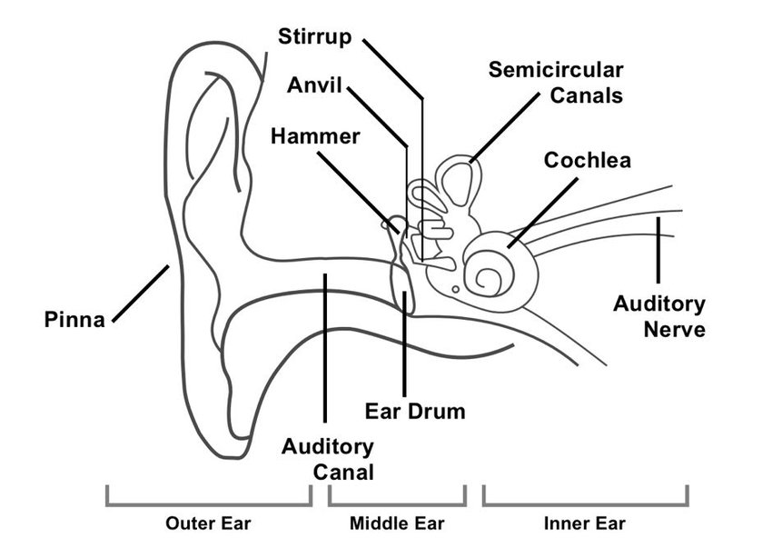
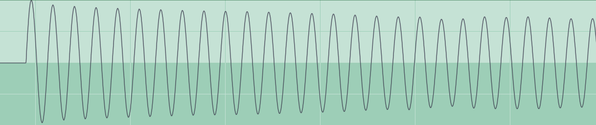
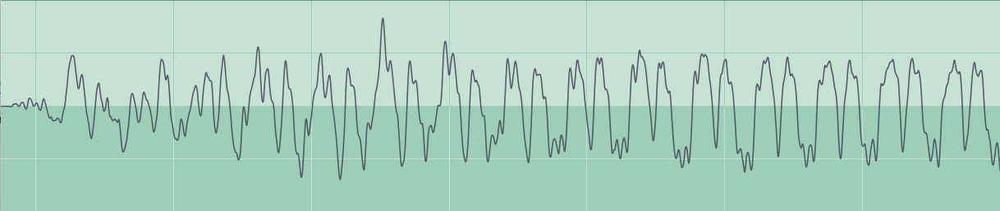
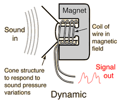
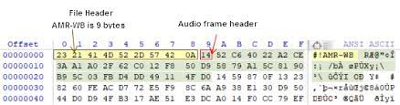
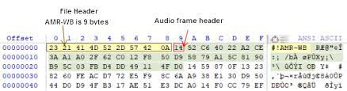
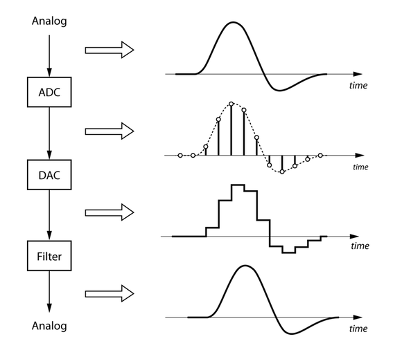

Week 1 - 1/18/23
Lecture Notes
Intro
- Resources
- Assignments being added to Canvas
- Book
- Slack
- How class will work
- lecture heavy at first
- more of a workshop toward the end
- assignments submitted through git
- exercises count as full credit when full exercise is submitted
- feedback isn't a markdown
- Student Introductions
- what's your major?
- what are you looking to learn in this class?
About Me
- nigelharsch.com
- Theatrical Sound Designer and Composer
- Sometimes films - Sometimes games
- Web Developer
- Sound isn't new to me
- Game design is
Course Intro
- Main Goals
- Basics of Sound
- What it is
- How to talk about it
- Sound as a material
- Working with Sound
- Sourcing
- Editing
- Adobe Audition
- To teach destructive editing
- Pro Tools
- For multitracking, to teach signal flow
- Recording
- Sound's role in games
- Technical implementation
- Asset Sheets
- Unity Integration
- Middleware
What is sound
- Examples from https://ciechanow.ski/sound/
- quick sound intro video
- changes in sound pressure level, detected by the ear
- varies in different animals
- How we hear
- 
- two ears = stereo
- volume differences and slight delays in sounds tell us position
- huge dynamic range of hearing
- we don't hear all frequencies equally
- more sensitive to human voice
- what is a waveform, what does it represent?
- temproal, time based
- aplitude changes over time
- relative to zero point
- negative and positive phase values
- 0 is quiet
- Amplitude is distance from 0 point
- frequency is how many times it crosses zero point
- one hertz = one oscilation per second
- we hear from 20hz -> 20khz
- when mixed, produce interference
- caused by waves amplifying or cancelling each other
- complex waves: many frequencies combined
- simple waves have one frequency
- real sounds are complex
- piano vs sine
- 
- [[sine-220hz.wav]]
- 
- [[piano-220hz.wav]]
- piano note will have fundemental frequency
- will also have high and low "harmonics"
- string harmonics
- piano resonance
- room reflections
- when these waves are added one new wav is perceived by an ear (or mic)*
- attack and decay
- our piano again
- a car passing
- a drum beat
- a conversation
acoustic sound vs electric vs digital
- acoustic is changes in atmospheric pressure
- how do we capture and store that?
- phonograph
- acoustic audio to etchings on a medium
- analog electrical audio
- analog electric audio is voltage in wire
- converted from acoustic using microphones and speakers
- stored on tape
- digital audio is a stream of numbers representing voltage measured n times a second
- acoustic and analog are continuous, digital is discrete (pixelated)
- 
 
- 
- what digital sound gets us
- consistent playblack
- smaller storage
- digital tools
- synthesis
- portability
- accessability
- DAWs
Describing Audio
In Subjective Terms
- Common subjective words:
- quiet
- loud
- muddy
- boomy
- boxy
- honky
- bright
- warm
- tinny
- wet
- dry
- fuzzy
- lofi
- harsh
- What words do you use?
- Many subjective words are talking about objective properties of sound
- Most are about EQ
- Muddy
- lacks definition or articulation
- could be a lack of high frequency content
- could be too much low frequency content
- could be too much reverb (more on that later)
- boomy, boxy
- often has to do with something resonating
- often small rooms
- if one resonant frequency, sometimes easy to fix
- bright, tinny
- warm
- has pleasing low mid
- could describe harmonic distortion or compression
- Some are about reverb and reflections
- wet
- dry, direct
- very little or no reflections
- honky, boxy
- too many early reflections
- Some are so vague to be almost useless
- fuzzy
- eaxtraneous, non signal noise
- could be background
- could be recording artifacts
- bad EQ
- distortion
- signal loss
- background noise
- digital compression aritifacts, bitrate
- Lofi
- EQ that favors midrange, like phones, phone speakers
- Low bitrate or digital compression artifacts
- analog tape hiss, warble
- vinyl surface noise
- Genres of music
Assigments
Exercise 1:
Assigned Reading:
- https://ciechanow.ski/sound/
- just skim through to get a working knowledge of what sound is
- book
In Class Notes